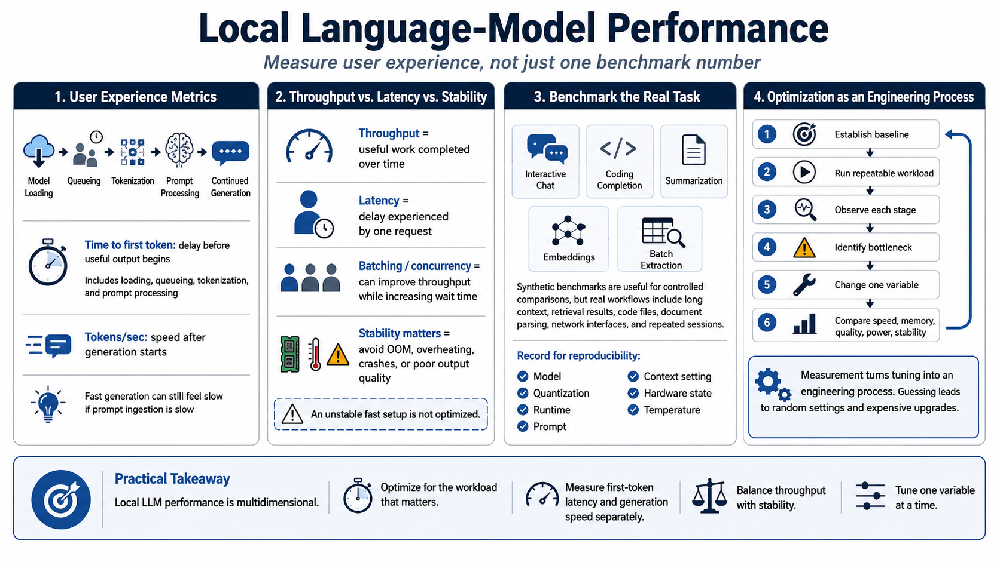

What Performance Means for Local LLMs
Connecting to LMS... Progress: in progress

Narration
Local language-model performance is a user experience, not one benchmark number. Time to first token measures the delay before useful output begins. That delay includes model loading, queueing, tokenization, and prompt processing. Generation speed, commonly reported as tokens per second, describes how quickly output continues after generation starts. A system can generate quickly yet feel slow if it spends a long time ingesting a large prompt.
Throughput is the amount of useful work completed over time, especially when several requests or documents are processed. Latency is the delay experienced by an individual request. Batching and concurrency may improve throughput while making one user wait longer. Stability also belongs in the performance definition. A fast configuration that runs out of memory, overheats, crashes, or produces unacceptable output is not an optimized system.
Synthetic benchmarks are useful for controlled comparison, but real workflows include context length, retrieval results, code files, document parsing, network interfaces, and repeated sessions. Measure the task that matters: interactive chat, coding completion, summarization, embeddings, or batch extraction. Record model, quantization, runtime, prompt, context setting, hardware state, and temperature so a result can be reproduced.
Optimization starts with a baseline. Run a repeatable workload, observe each stage, and identify the constrained resource before changing anything. Then alter one variable and compare speed, memory, quality, power, and stability. Guessing encourages expensive upgrades and random settings; measurement turns tuning into an engineering process.